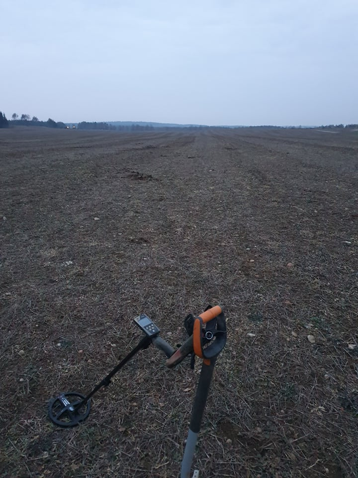
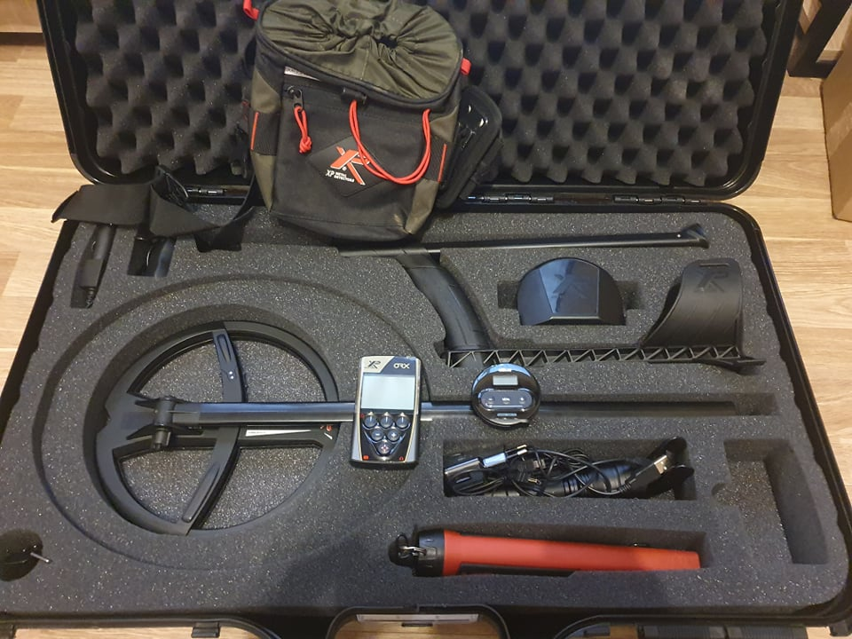

Esu Mindaugas Čeponis, neseniai atšvenčiau labai gražų jubiliejų - 30-ąjį gimtadienį. Visada šis skaičius gąsdino ir skambėjo baisiai, tačiau širdyje visiškai nesijaučiu kaip 30-ies 😊 Fun fact, šie metai paskatino mane pagalvoti apie ateitį, tad gimtadienio proga pasidovanojau sau CodeAcademy kursus ir, pagaliau, po 14 metų rūkymo, atsisakiau šio žalingo įpročio, iš naujo atradau meilę sportui ir pakeičiau požiūrį į gyvenimą. Paatviraujant apie šeimyninę padėtį, esu "užimtas" nuostabios merginos, kuri ne tik skatina ir motyvuoja tobulėti, bet ir padeda visais rūpimais klausimais. Ilgai galvojau, kokią gi įdomią istoriją galėčiau papasakoti apie save, bet galvoje iškart sukosi mintys apie vaikystę ir jos metu iškrėstas išdaigas. Buvau labai aktyvus vaikas, vasaras leisdavau pas senelius kaime, tad veiklos ten tikrai netrūko. Aktyvus vaikas buvau ne tik aš, bet ir mano pusbrolis, o kai mes susitikdavome, močiutė tikrai labai "džiaugdavosi". Istorijos esmė yra ta, kad karštą vasaros dieną senelis dažė garažą, o mes su pusbroliu, kaip patys geriausi anūkai, nusprendėme jam padėti. Deja teptukų neradome, bet po ranka pakliuvo višta, kuri ir atstojo teptuką 🤣 Toliau kaip ir viskas aišku, riksmai, rykštė ir vaikų verkimas...Tuo istoriją ir pabaigsiu.
Kiekviename amžiaus tarpsnyje mano hobiai keisdavosi. Iš pradžių labai mėgau sporto būrelius, tenisą, plaukimą ir kovos menus. Prasidėjus paauglystei, visus šiuos pomėgius apleidau. Visai neseniai atradau naują hobį - paieškas metalo detektoriumi. Draugas jau seniai užsiiminėjo šia veikla ir ilgai bandė įtraukti ir mane, kol galiausiai aš pasidaviau ir pabandžiau. Taip pat, tai buvo puiki proga "išgyventi" karantiną. Įsigyjau vieną metalo detektorių, užsikabinau, įsigyjau ir antrąjį. Taip ir "vaikštinėju" jau du metus. Šis hobis ne tik ramina, priverčia būti fiziškai aktyviu, bet ir skatina domėtis istorija - I ir II Pasauliniu karu. Įdomiausia tai, kad niekada nežinai ką atrasi po žeme. Kartais tai būna kamštelis, o kartais ir labai vertinga moneta.
 Kokarda buvo pritvirtinta ant carinės Rusijos armijos eilinio kareivio kepurės. Pirmojo pasaulinio karo laikotarpiu.
2 reichsmarkės 1936-1939m.
LDK. Žygimantas Augustas. Pusgrašis, 1564 m.
XVI a. pradžios sagė
1925m. Litų kolekcija